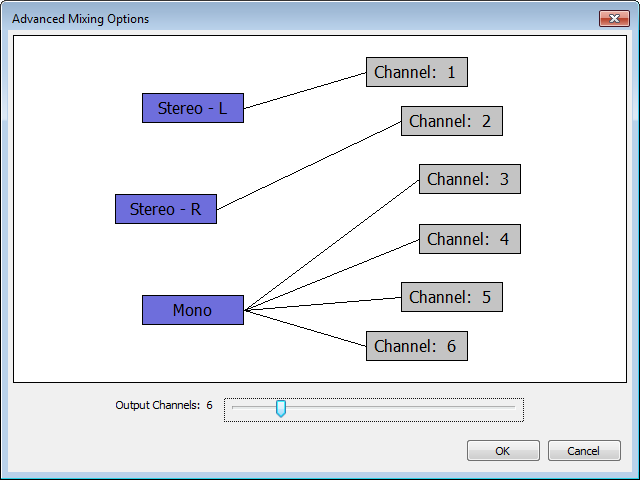

Advanced Mixing Options
From Audacity Manual
The Advanced Mixing Options dialog appears if you have chosen "Use custom mix" in the Import / Export tab of Preferences
- 
When you click and have chosen the name and format of your exported file, this dialog appears which presents you with the number of tracks you have in your project and allows you to map these as desired to each of up to 32 output channels (WAV, AIFF or OGG) or 8 output channels (FLAC).
- Currently there is no support for exporting multichannel files when using .
The tracks from your project shown on the left will be mixed down into the output channels shown on the right:
- The tracks in your project are shown in blue boxes.
- The output channels are shown in gray boxes.
- Adjust the Output Channels slider as desired to change the number of output channels.
- Click to select or unselect any box. A selected box is outlined in red.
- Clicking to select a box when another is already selected will link the boxes if they are not linked, or remove the link if they are linked.
Connect the tracks to the channels in the way that you want, then click "OK" to export to the multichannel file.
There is no support at the moment for multichannel playback of audio in Audacity - playback of a multichannel file in Audacity will always be mixed down to stereo.
Similarly, the and commands only mix down to mono or stereo.